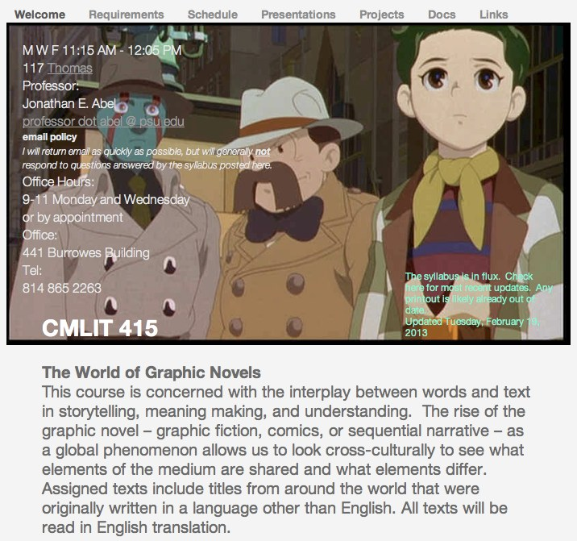
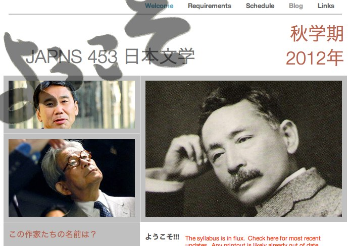
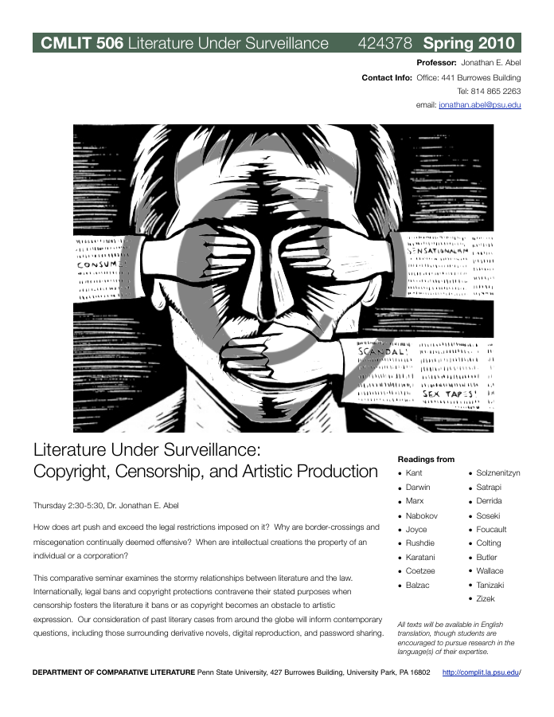
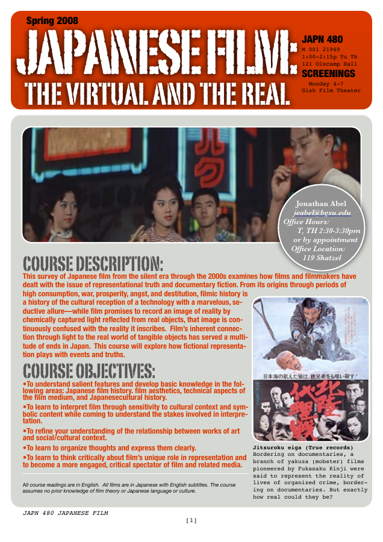
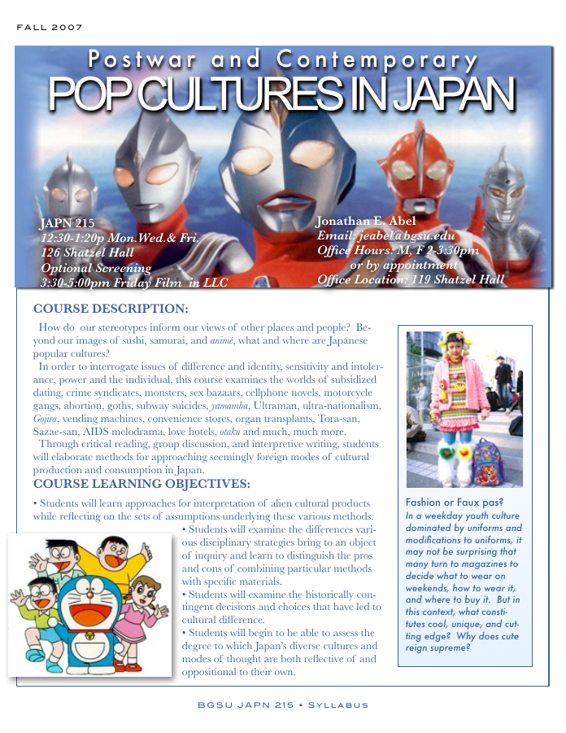

Previously Taught
SYLLABI Available below
Click below to go to the old course websites or download pdfs of my syllabi.
Previously Taught
2004-2013


CMLIT 415
Graphic Novel
JAPNS 121
Japanese Film and New Media



CMLIT 105
Literary Humor
CMLIT 501a
History of Close Reading


Fiction
CMLIT 504
Reality Fiction
AS502
Asian Modernities/
World Modernity
JAPNS121
J Film and New Media


CMLIT013
Virtual Worlds
Cool Japan JAPNS121


Japanese Film
4 Year Japanese
JAPNS453
Fall 2010
Senior Seminar in Criticism and Theory CMLIT400Y


Cultures of J-Pop
JAPNS121
CMLIT506
Japanese Film
4 Year Japanese
JAPNS453
Fall 2009
Intro to Asian Literatures
CMLIT004U
Fall 2009


Intro to Japanese Film
The Virtual and the Real
Spring 2008
Third Year Japanese
Spring 2008

Postwar and Contemporary Pop Cultures in Japan
Fall 2007
Japanese Society
Fall 2007
Third Year Japanese
Fall 2007


Intro to Modern Japanese Literature
Fall 2006
World of Banned Books
Fall 2005